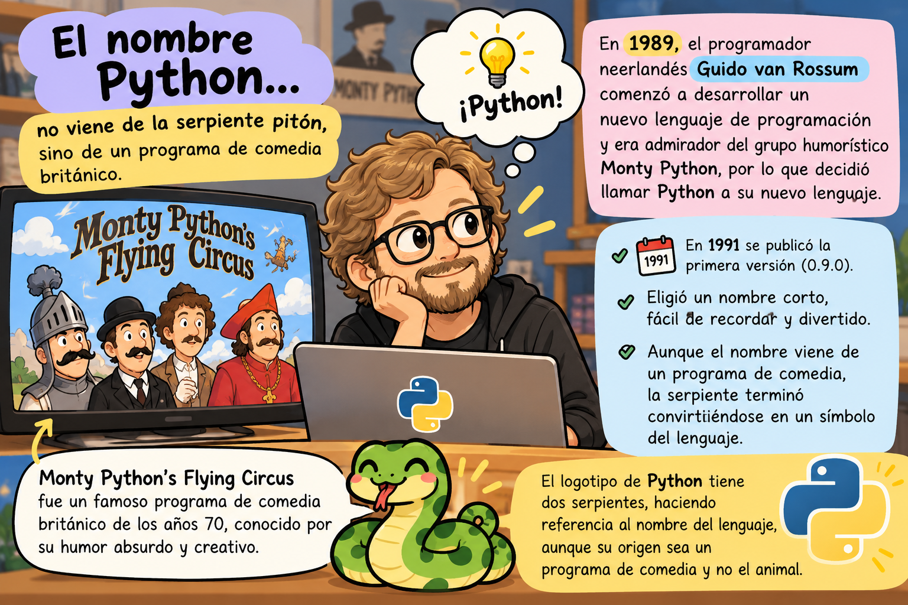
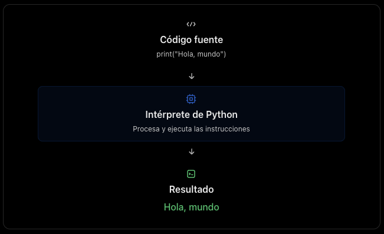
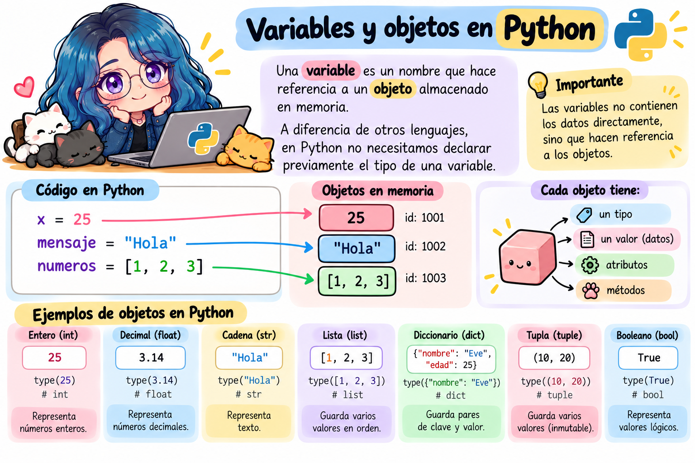
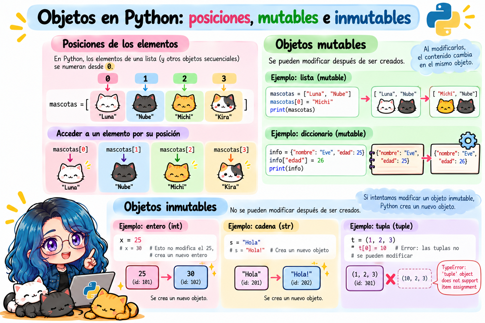

50Introducción a Python en Rstudio usando reticulate
Fecha: 26 de octubre, 2026
50.1 ¿Qué es Python?
Python es un lenguaje de programación de alto nivel, interpretado, de propósito general y con una sintaxis clara y legible.
Fue creado por Guido van Rossum y publicado por primera vez en 1991.
Actualmente, Python es uno de los lenguajes más utilizados en el mundo debido a su versatilidad y facilidad de lectura.
50.1.1 ¿Cuál es la historia del nombre?
En 1989, el programador neerlandés Guido van Rossum comenzó a desarrollar un nuevo lenguaje de programación mientras trabajaba en el centro de investigación CWI, en los Países Bajos.
Guido era admirador del grupo humorístico británico Monty Python’s Flying Circus, por lo que decidió llamar Python a su nuevo lenguaje.
Su intención era elegir un nombre que fuera corto, fácil de recordar y un poco divertido.

¿Por qué utilizar Python?
Permite desarrollar programas que realizan tareas de manera automática, procesan información, resuelven problemas y construyen aplicaciones.
50.2 ¿Qué es un lenguaje interpretado?
Un lenguaje interpretado es un lenguaje de programación cuyo código se ejecuta mediante un programa llamado intérprete, que se encarga de leer las instrucciones y ejecutarlas sin necesidad de generar previamente un archivo ejecutable independiente.
Python es un ejemplo de lenguaje interpretado.
50.2.1 ¿Cómo funciona?

50.3 Diferencia entre un lenguaje interpretado y uno compilado
Lenguaje interpretado
Lenguaje compilado
Utiliza un intérprete para ejecutar el programa.
Generalmente utiliza un compilador para generar código ejecutable.
Normalmente no requiere generar un ejecutable independiente.
Habitualmente necesita una etapa de compilación previa.
Ejemplo: Python.
Ejemplo: C.
50.4 ¿Qué es reticulate?
reticulate es un paquete de R que permite ejecutar código de Python directamente desde R, facilitando la integración de ambos lenguajes de programación en un mismo proyecto.
Con reticulate podemos aprovechar las herramientas de R y Python sin necesidad de cambiar constantemente entre programas.
50.4.1 ¿Para qué sirve reticulate?
Entre sus principales aplicaciones se encuentran:
Ejecutar código Python desde R: escribir y ejecutar instrucciones de Python dentro de una sesión de R.
Utilizar bibliotecas de Python: acceder a herramientas como NumPy, pandas y scikit-learn.
Compartir datos entre R y Python: transferir variables, vectores, listas y tablas de datos.
Integrar ambos lenguajes: desarrollar proyectos que aprovechen las funcionalidades de R y Python.
Trabajar en Quarto y R Markdown: combinar fragmentos de código de ambos lenguajes en un documento reproducible.
50.5 Opción A: Ejecutar Python desde la consola de R
Una de las funciones más importantes es repl_python(), que permite acceder a una consola interactiva de Python sin salir de RStudio.
Paso 1. Abrir la consola de Python desde R:
Código
library(reticulate)
Warning: package 'reticulate' was built under R version 4.6.1
Código
repl_python()
Python 3.12.13 (/Users/ecoss/.cache/uv/archive-v0/cb_IldkfR46NZ8HFdegcN/bin/python)
Reticulate 1.47.0 REPL -- A Python interpreter in R.
Enter 'exit' or 'quit' to exit the REPL and return to R.
exit
O también podemos usar:
Código
reticulate::repl_python()
Python 3.12.13 (/Users/ecoss/.cache/uv/archive-v0/cb_IldkfR46NZ8HFdegcN/bin/python)
Reticulate 1.47.0 REPL -- A Python interpreter in R.
Enter 'exit' or 'quit' to exit the REPL and return to R.
exit
El indicador de la consola cambiará de > (R) a >>> (Python). Para salir usa exit o quit.
Paso 2. Escribir instrucciones de Python:
Código
print("Hello world")
Hello world
Paso 3. Regresar a R:
Código
exit
Use exit() or Ctrl-D (i.e. EOF) to exit
Esto cierra la consola interactiva de Python y permite continuar trabajando con R.
50.6 Opción B: Ejecutar instrucciones de Python desde R
También podemos ejecutar código de Python directamente desde un script de R utilizando py_run_string().
Código
library(reticulate)py_run_string("print('Hola desde Python')")
Podemos utilizar bibliotecas como NumPy, pandas o scikit-learn.
En versiones recientes de reticulate, se recomienda declarar las dependencias con py_require(), que puede gestionar automáticamente un entorno de Python compatible.
Este ejemplo utiliza NumPy, una biblioteca de Python especializada en operaciones numéricas.
50.9 Principales funciones de reticulate
Función
Descripción
py_config()
Muestra la configuración de Python.
repl_python()
Abre una consola interactiva de Python.
py_run_string()
Ejecuta instrucciones de Python desde R.
py_run_file()
Ejecuta un archivo .py.
import()
Importa bibliotecas de Python.
py_require()
Declara las dependencias de Python.
py$variable
Accede a variables de Python desde R.
r_to_py()
Convierte objetos de R a Python.
py_to_r()
Convierte objetos de Python a R.
50.10 Cómo instalar paquetes de Python desde RStudio
Podemos instalar bibliotecas de Python directamente desde RStudio utilizando el paquete reticulate, sin necesidad de abrir otra aplicación.
50.10.1 Utilizar py_require() (recomendado)
En versiones recientes de reticulate, la función py_require() permite declarar las bibliotecas de Python que necesitamos y gestionar automáticamente sus dependencias.
py_require() no necesariamente instala los paquetes en el momento de llamarla; declara las dependencias y permite que reticulate las resuelva al inicializar Python.
Python 3.12.13 (/Users/ecoss/.cache/uv/archive-v0/cb_IldkfR46NZ8HFdegcN/bin/python)
Reticulate 1.47.0 REPL -- A Python interpreter in R.
Enter 'exit' or 'quit' to exit the REPL and return to R.
exit
Código
import numpy as npnumeros = np.array([10, 20, 30, 40])np.mean(numeros)
np.float64(25.0)
Una vez dentro de Python, observarás que el indicador de la consola cambia de > a >>>.
50.10.2 Comparación entre R y Python
Desde R con reticulate
Desde repl_python()
np <- import("numpy")
import numpy as np
numeros <- np$array(c(10, 20, 30, 40))
numeros = np.array([10, 20, 30, 40])
np$mean(numeros)
np.mean(numeros)
Observa las diferencias:
En R utilizamos <- para asignar valores; en Python utilizamos =.
En R utilizamos $ para acceder a funciones de un objeto; en Python utilizamos ..
En R utilizamos c() para crear un vector; en Python podemos utilizar [] para crear una lista.
50.11 ¿Qué es un objeto en Python?
En Python, un objeto es una entidad que contiene información (datos) y tiene un tipo que determina las operaciones que podemos realizar con él.
Una característica fundamental de Python es que todo es un objeto, incluyendo números, cadenas de texto, listas, funciones y clases.
Cada objeto tiene tres características principales:
Identidad: permite distinguir un objeto de otro.
Tipo: determina qué clase de objeto es y qué operaciones admite.
Valor: representa la información que contiene el objeto.
Atributos: representan características o información asociada con un objeto.
Métodos: son funciones asociadas con un objeto que permiten realizar operaciones.
50.12 Variables y objetos en Python
Una variable es un nombre que hace referencia a un objeto almacenado en memoria.
A diferencia de otros lenguajes, en Python no necesitamos declarar previamente el tipo de una variable.

Podemos cambiar el objeto al que hace referencia una variable:
Código
numero =10numero ="Diez"
En este caso, numero primero hace referencia a un objeto entero y después a una cadena de texto.
Esto es posible porque Python utiliza tipado dinámico.
50.13 Tipos de objetos en Python
Python dispone de diferentes tipos de datos integrados.
Los objetos en Python pueden clasificarse en dos grandes grupos.
Objetos mutables: permiten modificar su contenido después de haber sido creados. Por ejemplo, las listas y los diccionarios.
Código
numeros = [10, 20, 30]numeros[0] =100# Modificar el contenido de la posición 1print(numeros)
[100, 20, 30]
Objetos inmutables: no permiten modificar su contenido una vez creados. Por ejemplo, los enteros, las cadenas de texto y las tuplas.
Código
nombre ="Ana"nombre ="María"
Este código es válido, pero no modifica el objeto "Ana": la variable nombre pasa a hacer referencia a otro objeto.

Por ejemplo:
Código
x =25x =30
Cuando ejecutamos x = 30, no modificamos el objeto entero 25. La variable x simplemente deja de referenciar al objeto 25 y comienza a referenciar al objeto 30.